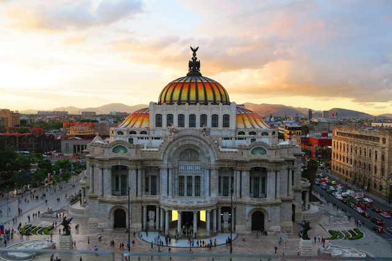

Start here
- Stay: Roma Norte or Condesa for walkability, cafes, restaurants.
- Phone: Install WhatsApp before you arrive; consider an eSIM.
- Cash: Just use ATMs.
- Airport: Uber/Didi works.
- Traffic: Sundays are the easiest day to move around; weekday rush hour is real.
- Don’t miss: Chapultepec Castle, Anthropology Museum, a Reforma Sunday, and a day trip to Teotihuacan.
Where to stay
Roma and Condesa are my favorite neighborhoods and there are lots of great Airbnbs. In normal traffic it takes around 45 minutes to get there from the airport.
Phones
Everyone uses WhatsApp so install it before you get here. If you don't want to use your roaming just get an eSIM. Airalo has worked well for me.
Paying
Credit cards are accepted widely but rarely used at street food stands. You can easily take out pesos at ATMs; don't bother with any money changers as they're expensive. Mexicans usually tip 10% and I usually up that to 15% if the service is good. Your server will generally ask you "¿cuenta cerrada?” when paying with a credit card. You answer with the percentage you would like to add. You don't write the tip amount on the receipt. Also if you're ever asked to pay in pesos or dollars, when paying by credit card, always say pesos. Your credit card company will almost always charge you less for the conversion.
Getting around
Sunday is usually the only day with little traffic and it's almost all day from 7:00 am to about 10pm.
- Uber and Didi - You can also order them from the airport.
- OpenTable - Many restaurants but not all can be booked on their app or website.
- Ecobici - Rent bikes for a day, 3 days or a week. Sometimes has issues with foreign credit cards so try them out when you're not in a hurry.
Restaurants
High-end gourmet ($$$)
Reservations are required, often weeks in advance.
- Pujol - Michelin-star-rated; I've had both amazing and not-so-great experiences here.
- Quintonil - Michelin-star-rated; my favorite high-end restaurant in Mexico City.
Mid-range favorites ($$)
- Bella Aurora - Nice terrace and good food.
- Botánico - Modern Mexican inspired food in a beautiful house. Their wood-grilled oysters are my favorite but only available on weekends.
- Bulla - Spanish tapas.
- Caracol de Mar - Same chef as Contramar but a little less known so easier to get into and with a quieter setting. The crudo de camarón is my favorite dish.
- Chuí - Tasty vegetarian restaurant with a nice private patio.
- Contramar - Great seafood but usually busy so get there early or plan to wait.
- Fugaz.
- GABA - Contemporary Mexican cuisine.
- Los Arcos San Jerónimo - Great seafood. Try the taco gobernador.
- Marmota - A lot of wood-smoked items inspired by the chef's time in Seattle.
- Meroma - One of my favorites.
- Mog - Japanese comfort food. Cool place for a date.
- Tetetlán - Close to San Angel and good option after checking out the Saturday Bazar.
- Voraz - Mexican gourmet food.
Relatively Cheap and delicious ($)
- Churrería El Moro - Technically not a restaurant but a must if you love churros.
- El Aguachilón - Good fresh seafood at a casual place.
- La Secina - Good tlayudas but a little off the beaten path.
- Maizajo - The standing bar on the ground floor has great tacos.
- Orinoco - Northern style tacos and they have the best website ever. My favorite are the tacos de chicharrón.
- Tacos del Valle - They have 3 types of trompo and all of them are delicious.
Cafes
You can find cafes almost every two blocks in Condesa and Roma.
Bars (I'm no longer the expert here)
- Clandestino - Small dive bar with good variety of Mezcales.
- Limantour - Good cocktails.
- Balmori - Terrace bar restaurant.
- Supra Roma - Great rooftop view and also serves decent food.
Places and things to see
- Parque Mexico and Parque España.
- Parque La Mexicana - Nice park with restaurants and a great view of Santa Fe. From the Condesa area there is a lot of traffic but Sundays are fine.
- Roma Norte - Walk down the Colima and Tabasco streets east of Insurgentes and also check out Plaza Luis Cabrera and Plaza Rio de Janeiro.
- Reforma - Sundays the main street closes and you can walk or ride bikes. Great way to see the financial district up till the center. You can also rent bikes at a shop in front of Parque Mexico for $50.
- Monument to the Revolution - Worth paying to go to the top and you can even grab a coffee to enjoy the view.
- The city center (Zócalo) - Walk from the Palacio de Bellas Artes to the Palacio Nacional. Be sure to check out Diego Rivera's mural in the Palacio Nacional.
- Chapultepec Castle - Go see the park and then the museum with a great view.
- Anthropology Museum.
- Coyoacán and Frida’s House - Buy your tickets online.
- San Angel on Saturdays (Saturday Bazaar).
- The Teotihuacan Pyramids - Day trip and worth seeing in a hot air balloon.
- Nevado de Toluca - Day trip to a dormant volcano with a lake in the middle.
- Lucha Libre - One of those things you need to see once in your life. Crazy wrestling with beer and popcorn.
Where I buy
- Groceries - I order almost everything from Chedraui on Uber Eats. There are also several supermarkets you can easily walk to in the Condesa/Roma area.
- Tianguis - They're a sort of farmers' market that pops up on certain days and are great for finding fresh fruits, veggies, seafood, and poultry. In Condesa there is one on Tuesday and another on Friday.
- Mercado de Roma - The closest big market in the area. Worth stopping in just to see the variety of goods available.
- Odette - Great sourdough bread and an excellent bakery, especially if you have a sweet tooth.
- Tortillas - The Oaxacan truck stands usually have decent tortillas. There is one at Parque México on Tuesdays, Thursdays, and Saturdays, but you'll notice them quite frequently if you walk around. For gourmet but expensive tortillas, go to El Molino. I prefer to buy the dough/masa at Tortillería "del comal” and just make them fresh myself.
- Beef - Wild Fork.
- Coffee Beans - Blend Station.
Types of food to try
- Aguachiles.
- Ceviches.
- Tostadas.
- Carnitas.
- Barbacoa.
- Tacos al pastor.
- Tacos de guisado.
- Tacos de canasta.
- Quesadillas.
- Tlacoyos.
- Huaraches.
- Pozole.
- Tlayudas.
- Tamales.
- Chilaquiles.
- Mole.
- Esquites / Elotes.
Other
- Casa Jacaranda - Great cooking class where you get to tour a market, cook the goods you buy and includes a good selection of Mezcal, Tequila and Wine.